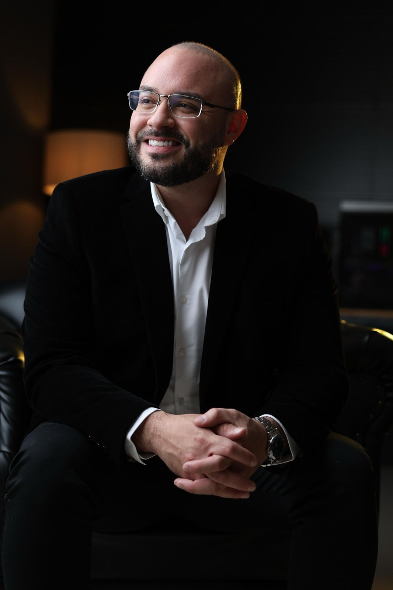

Ortopedia Integrativa e Regenerativa
Dor crônica, artrose, dores articulares ou trauma esportivo que não melhora? O Protocolo 5R trata a causa com uma abordagem integrativa e personalizada. +15 mil vidas transformadas pelo movimento.

Mais de 10 anos dedicados ao diagnóstico e tratamento de dores articulares e musculoesqueléticas.
Tratamento para retardar a evolução e recuperar qualidade de vida
Joelho, coluna, ombro — diagnóstico preciso da causa raiz
Prevenção e manejo da densidade óssea com acompanhamento clínico
Recuperação de traumas musculares e articulares pós-esporte
Procedimentos guiados para tratamento localizado da dor
Cirurgias ortopédicas e trauma do esporte com reabilitação completa
Conteúdo clínico real, sem floreios. Cada módulo foi pensado para te ajudar a entender o que está acontecendo com o seu corpo e qual o melhor caminho para a recuperação.
4 vídeos que explicam por que a dor no joelho volta, qual a causa real da dor crônica, e quando procurar ajuda. Sem achismo, sem generalização.
A metodologia completa explicada passo a passo: Reduzir, Recuperar, Reforçar, Reprogramar, Retornar. Material para pacientes e profissionais.
Ver protocoloGuias de exercícios para joelho, coluna e mobilidade no dia a dia. Rotinas seguras para cada fase da recuperação.
CRM 4692 | TEOT 14080
Médico ortopedista especialista em Ortopedia Integrativa e Regenerativa. Foco em dor crônica, artrose, dores articulares, trauma esportivo e cirurgia do joelho. Mais de 10 anos de experiência aliando medicina preventiva, hábitos saudáveis e tratamento individualizado.
Já ajudei mais de 15 mil pacientes a viverem sem dor e com qualidade de vida, por meio de uma abordagem humanizada com avaliação biopsicossocial completa. Meu objetivo é tratar a causa, não apenas os sintomas.
O protocolo mais completo em busca da regeneração de tecidos e alívio das dores. As fases são feitas em conjunto, com abordagem quinzenal.
Veja depoimentos em vídeo de pacientes que recuperaram o movimento e a qualidade de vida.
DEPOIMENTO EM DESTAQUE
"Há 3 anos sentia dor no joelho que me impedia de subir escadas. Após 4 meses com o Dr. Bruno, voltei a caminhar sem dor. O Protocolo 5R mudou minha vida."Maria Clara S., 58 anos
Tratamento: Protocolo 5R para artrose de joelho
Resultados reais de quem confiou no tratamento.
Unidades em Teresina, Santa Inês, Presidente Dutra, Santa Luzia e Caxias com infraestrutura completa para diagnóstico e tratamento.
Rua 24 de Outubro, 150
Centro, Caxias - MA
R$ 460 (com desconto: R$ 350)
Santa Inês - MA
R$ 380
Presidente Dutra - MA
R$ 350
Santa Luzia - MA
R$ 350
Atende também por plano de saúde (vagas reduzidas).
Entre para a comunidade no WhatsApp e acompanhe conteúdo exclusivo, ou fale diretamente com o Dr. Bruno.